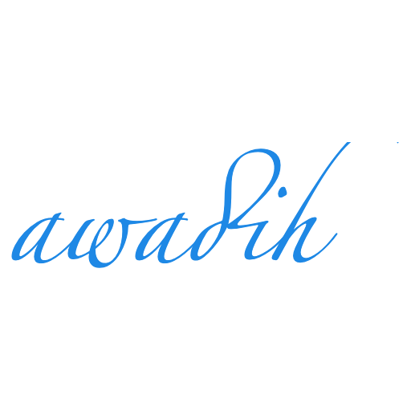

Personal blog of A. Wadih, M. Sc.
A brief portfolio about me!
Welcome
Passionate for general knowledge, I post in this peronal blog my updated works in different fields, namely energy-related and data-driven projects. Besides my background in energy sciences & experience in data science, I am keen on working on volunteering projects.
Academic context
Here are cited some bounded parts of my curriculum as well as the essential publications I have made in the course of my education.
Education
-
Master's Degree M.Sc. Renewable Energy Cologne University of Applied Sciences, Germany
-
Engineering Diploma, Branch: Energy Sciences Graduation grade: good National School of Mineral Industry (ENSMR), Rabat, Morocco
Publications
- M.Sc. thesis:
"Model-predictive control of energy flows in a district", Sep. 2022 - An analysis of the energy consumption data using Python programming language has been realised. Besides, an energy model, developed with a Functional Mock-up Interface (Dymola-Software), was used to implement a model-predictive control of energy flows in a district. As to the mathematical formulation and resolution, the Python Package Pyomo as well as the CPLEX-Solver were used to formulate and solve a mixed integer linear programming MILP-Problem. - Conference-paper:
"Machine learning approach for finding an optimal operation strategy for a pv-diesel-hybrid system", October 2023 - A research paper discusses the implementation of AI, specifically Reinforcement Learning with a ‘Deep-Q-learning algorithm’, for the optimization of energy systems. Based on an already existing pv-diesel-systems’ MATLAB-model, a new AI-powered Python-Script has been developed in order to find an optimal operation strategy. The work has been presented during the Poster-Exhibition at Cologne University of Applied Sciences, Germany - Engineering Diploma thesis:
"Feasibility study for the preliminary assessment of a windpark project Lafarge Ciment, factory of Tétouan", Academic year 2015/2016 - This work constitutes a full, complete feasibility study for windpark development. It responds to the local as well as worldwide requirements related to feed-in Tarif, geotechnics, environment and economical viability. Covered topics are, inter alia, statistical weather data analysis using the IEC 61400 standard, geography of area for wind turbines’ placement, investigation of the visual impact and the economic feasibility of the project. - Research Paper:
"Benefits of a time-based simulation of integrated energy systems", winter semester 2022/2023 - As part of the energy transition, greenhouse gases are to be minimized as well as the fluctuating renewable energies are to be integrated into the energy system. In order to simulate the complex energy systems, simulation models have been developed at various research institutes. This paper presents four mainsimulation models from different institutes and some related studies and projects. The possibilities to achieve defossilization are also discussed.
Experience
My background in energy sciences gave me a solid motivation towards engineering concept designs. Starting from Design and engineering of conveyor belts during my internship at the moroccan company Ciments de l'Atlas - CIMAT to Performance study of the demineralized water station at the Kénitra thermal power plant, which belongs to The National Office of Electricity and Drinking Water of Morocco, I have witnessed a tangible, on the ground contribution to many industries.
Furthermore, my experience in Morocco gave me confidence and self-reliance to solve problems. Maybe one challenge to that was to find reliable, accurate, and if possible, live data sets. Later on, in Germany, I have found the ground of very large bulk of data available, but needs much effort to proccess. I came to the conclusion that data-driven improvements may take time, but still possible.
It was at Impuls Energy Trading GmbH, that I could think in a better structural manner. The reason, I think, utilizing new team-work methods for project management. A combination of scrum and kanban in one workflow management system for the company was very helpful. I was then very satisfied with the workflow.
Nevertheless, I have felt always self-reliant, as I helped fasten the work process with my automation algorithms. Especially at Deutsche Glassfaser GmbH that I could show my potential as a key team player with automation solutions I created with Python and VBA.
At first glance, travelling to Germany for further education and work was not an easy decision to take. I doubt calling that a cultural chock, but thank God I was able to gain a strong adaptability, flexibility and patience. Thus, I am satisfied with both experiences, in Morocco, as well as in Germany.
Acknowledgements
My gratitude goes to my parents, family members and neighbours for their support.
Very grateful to all the scholars from pre-prep school to university.
My special thanks goes to people, who helped me without my knowing.
Please feel free to contact me for any remark. Happy to receive ideas and cooperate towards Projects for Good. 